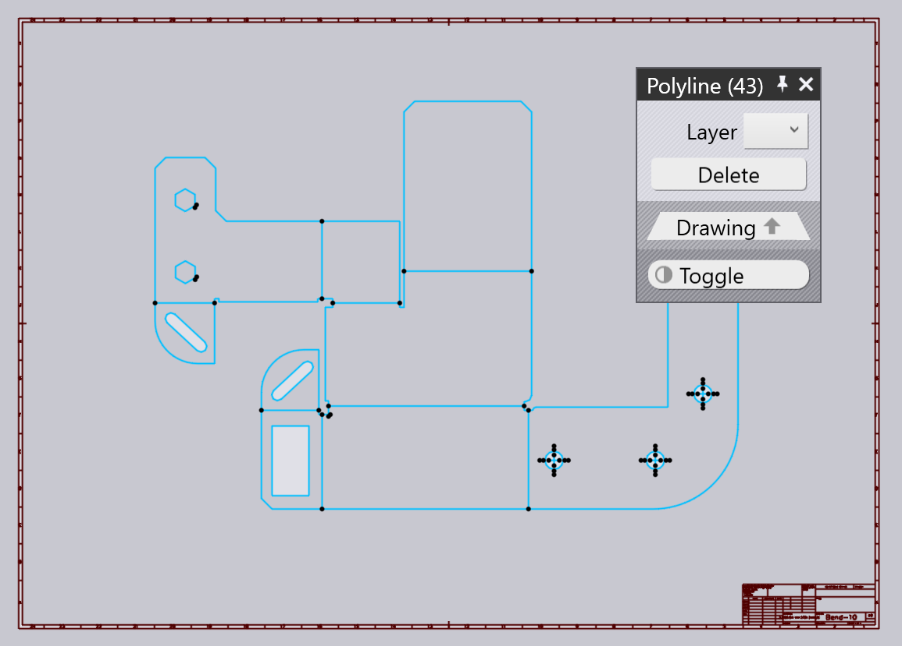

2D清理
以下是如何清理匯入的DXF圖紙並將其轉換為可以進一步加工的_板材_圖紙。假設您從一個看起來像這樣的DXF開始：

此DXF有幾個問題需要修復：
-
有邊框和標題塊。
-
材料和厚度未指定（匯入後可以看到 TecZone 視窗底部的選項卡為材料和厚度顯示關閉, 0）。
-
有些輪廓沒有_閉合_ - 一些轉角附近有小的重疊或間隙。
-
沒有折彎線資訊（折彎線繪製為法線，但不包含有關其角度、方向或半徑的資訊）。
1：移除偽實體
在中間的實際零件圖周圍畫一個橡皮筋矩形（點擊一個角，拖動到另一個轉角，然後放開滑鼠按鈕）。我們想要保留的實體都已選取：

點擊切換按鈕以選擇_其他所有選項_，然後按該面板上的 刪除 按鈕刪除所有不需要的實體，如邊框、標題塊等。


3：設置材料
點擊零件的材料名稱（您可以在底部的檔案選項卡上看到它），然後輸入材料名稱，或從材料清單中選擇。然後，點擊厚度（最初設置為0mm，並設置零件厚度）。

在定義任何折彎線_之前_，請記得執行此步驟來設置材料和厚度。材料和厚度對於TecZone設定折彎餘量至關重要[2]。